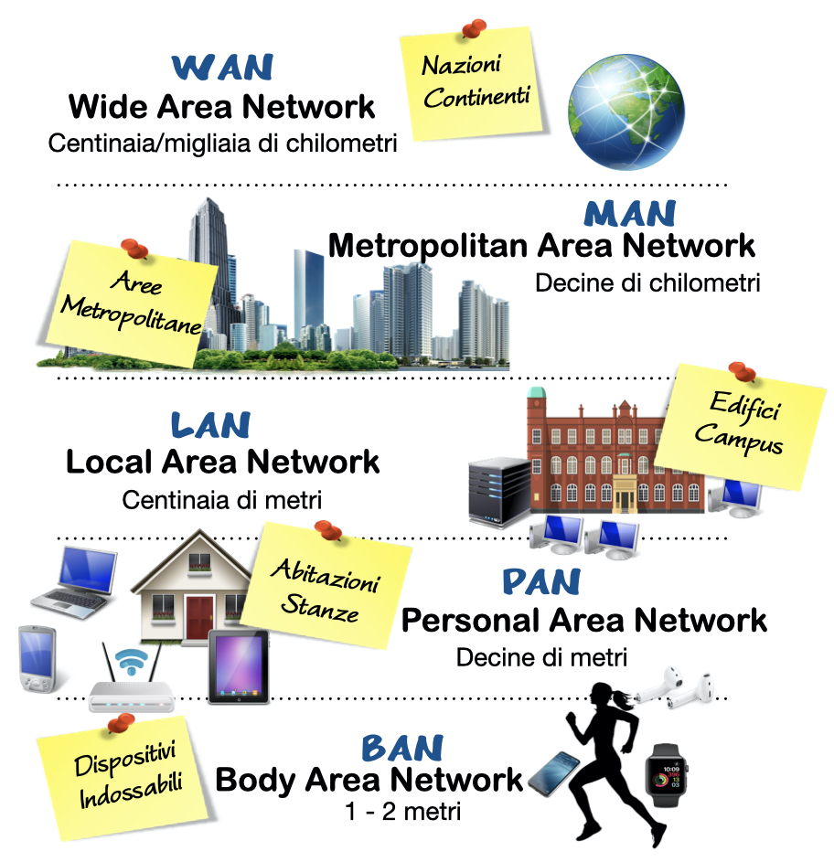
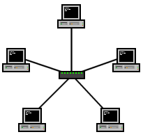
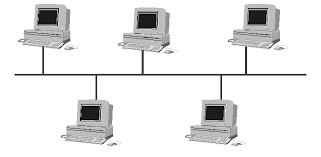
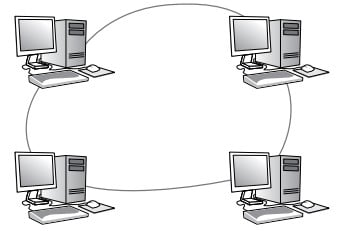
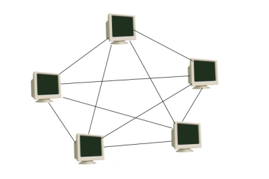

Unità 5
Da pagina 272 a 289
Tipi di rete

Topologia di reti

Rete a stella
La rete a stella è una configurazione in cui tutti i dispositivi sono connessi a un nodo centrale (hub o switch).
Le comunicazioni passano attraverso questo nodo, che coordina il traffico.

Rete a bus
La rete a bus è una topologia in cui tutti i dispositivi sono collegati a un unico cavo di trasmissione. I dati viaggiano lungo il bus e solo il dispositivo destinatario li riceve. È semplice ed economica, ma la sua performance può diminuire con l'aumento dei dispositivi. Se il cavo principale si danneggia, tutta la rete può essere compromessa. Oggi è meno utilizzata nelle reti moderne.
Rete ad anello

La rete ad anello è una topologia in cui i dispositivi sono connessi in un ciclo chiuso. I dati viaggiano da un dispositivo all'altro fino a raggiungere la destinazione. Può essere unidirezionale o bidirezionale. È semplice da implementare ma vulnerabile a guasti: se un nodo o un collegamento si rompe, l'intera rete può essere compromessa. Tuttavia, alcune varianti come l'anello ridondante migliorano l'affidabilità.

Rete a maglia
La rete a maglia è una topologia in cui ogni nodo è connesso a più nodi, creando una rete interconnessa. È molto resiliente e scalabile, poiché i guasti possono essere aggirati tramite percorsi alternativi. Offre alta affidabilità e prestazioni, ma può essere complessa e costosa da gestire. È usata in applicazioni come le reti Wi-Fi mesh e le reti di sensori.